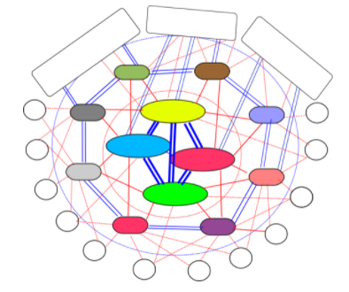

前言
好久没有写blog了，近一年来，不断在学习网络相关的东西，最近看了许多书籍和paper，觉得是时候该写一篇有关网络层相关的文章，来梳理一下自己所学的知识点。在写这篇文章之前，我大概看过《计算机网络（谢希仁著）》、《网络是怎样连接的》和《Computer Networking A Top-Down Approach》等几本书。早在刚开始决定学习一下网络原理之初，我选择了《TCP/IP详解 卷1》来看，不过结合个人的学习经历，相比于Top-Down，个人认为这本书其实并不适合刚入门的初学者看，它略过了太多的细节，相反《Computer Networking A Top-Down Approach》这本，不论在内容编排上，还是在内容阐述上都非常合理、清晰，循序渐进，对于想入门计算机网络的人来说，是绝佳的经典教程。
按照我自己的习惯，每经历一个阶段的学习，我就会进行一次知识的梳理和总结，今天写的这篇目的是通过阐述数据包在网络层中的流转，梳理网络层的整体结构，运作流程。最终串联各个知识点。本文将通过3个数据包流转的例子（其中一个是在一个很小的局域网内的传输，一个是在AS内的传输，还有一个是跨AS的传输），来逐步展现网络层的基本组成成分，以及不同规模情况下的基本运作流程。网络层数据包协议主要有IPv4和IPv6两种，目前广泛运用的仍然是IPv4，为了解决IPv4地址耗尽的问题，专家们提出了IPv6。本文探讨的内容，主要针对IPv4，不对IPv6作深入探讨。
本文旨在梳理网络层的基本结构和运作流程，并不涉及到网络层的方方面面，文章也会大量引用《计算机网络》、《网络是怎样连接的》、《Computer Networking A Top-Down Approach》以及其他一些论文的论述和插图，最后本人学识水平有限，如有疏漏，欢迎大家批评指正。
网络层的作用和层次结构
作用
要理解网络层的作用，首先得简单回顾以下运输层的作用。运输层最大的特征就是复用和分用，所谓的复用就是host所有应用进程共享一个运输层的服务，所有应用层的数据包，最终都是交给传输层处理。所谓分用则是，数据包达到对端的运输层以后，根据端口号识别它应该发往哪个应用进程，每一个应用进程都可以绑定一个或者多个端口号。如果把数据包通信比喻为物流传输，那么运输层的作用则是，控制物流的发货量，是否重发，什么时候重发，接收到数据包后返回确认，并决定将包分给谁。运输层的行为发生在端与端之间，而网络层则充当快递员的角色，需要根据目标地址，层层转发，最后交付给目的端。
如果说运输层是实现了host中进程之间的通信，那么网络层则是实现了host间的通信，它通过数据包的目标IP地址，不断得找出通往该IP地址的路由器（下一跳路由器地址），并最终将数据包送到目标机器上的协议层。本质的功效是导航数据包去往目标机器。
图1
与运输层不同，运输层是端对端的通信，运输层只实现在网络最边缘的host之上，而网络层（及其以下的层），则需要在边缘网络和核心网络上广泛部署，如图2所示：
图2
层次结构
对于数据包在网络中的传输过程，我们最直观的的感觉，大概是如下所示那样（比如hostA要发送一个数据包给hostB）：
hostA –> network –> hostB
然而事情并不是那么简单，就好比我们的物流，A要寄件给B，首先A要填写自己的地址及B的地址，以方便定位收件人的地址，然后才是交给物流公司帮忙转运，物流公司也是要根据B的收件地址，不断转发到不同地址的物流中转站中，每次转站都会寻找离收件地址更近的中转站派送，最后派送到B的收件地址中。数据包在网络层中的传送，也大概是这样的流程，A和B是两个host，数据包在网络层中的中转站则是路由器，他们也都需要分配地址，我们称为IP地址。也就是说，我们的数据包，所经过的hostA、hostB以及在传输过程中经过的路由器，都需要分配IP地址。
我们的网络，就是这些被分配了IP地址的主机、路由器相互连接组合而成的网络。实际上，为了方便管理和查找，我们现实生活中的地址，是被按行政区来划分层级（如xx省xx市xx区xx街道xx号），这样我们就可以通过不是特别长的描述来精确定位到一个地址的具体位置。层次划分有利于我们管理和快速查找，如将电脑中的文件分门别类放在不同的目录，查找具体的文件显然比把所有的文件放在一个目录来得高效。同样的，我们的网络世界，也是有层次划分的：
图3
我们的网络被划分为几个层次，其中Tier-1、Tier-2和Tier-3分别位于第一、第二和第三层。每一层都通过许多ISP（Internet Service Provider）构建的网络互连而成，我们的IP地址和网络服务都是ISP提供给我们的。Tier-1网络是将全世界网络连通的交通枢纽，任何数据包到达这一层，只要目标地址有效，就一定能够被送往正确的次一级的网络中，最后层层转发，发送到目的IP地址。Tier-2则是区域级的，数据包能在自己管辖的区域内交付就在区域内交付，否则直接转到Tier-1。Tier-3则是更小区域范围的网络，为终端用户分配IP的接入网则位于这一层。图4更加体现了这种层级结构：
图4
要构建自己的网络，首先ISP需要有大段的地址块，这些地址块可以向ICANN[1]这个机构申请。一些大的ISP会将一部分地址块提供给次一级的ISP，让他们构建更小区域的网络。
接下来我们要讨论一下IP的结构，我们现在运用最广泛的仍然是IPv4，它使用32位整数值表示一个地址，不过为了方便阅读，我们通常将每个字节按照点分十进制的字符串来表示，如192.168.1.1。
最早的网络IP地址是有区分A、B、C类的，一个网络IP由两个部分组成，即网络号和主机号，在旧的划分方式中，A类地址的网络号是高8位，余下24位为主机号；B类地址则高16位是网络号，低16位为主机号；C类地址则高24位是网络号，低8位是主机号。然而这种划分方式，导致的一个很严重的问题则是造成大量的地址浪费，如一个C类网络，能够承载的主机数是254个（主机号全0和全1的地址要保留），而一个拥有5000台主机的网络，显然使用一个C类地址就远远不够，因为申请新的IP往往需要花费很长的时间，一般的机构更喜欢申请B类地址（B类地址能够容纳的主机数是65534个），这直接导致了B类地址被过快分配，为了缓解地址浪费的问题，后来出现了子网划分的方式，将原来的IP地址，由两级变为3级，即网络号|子网号|主机号。但是子网的出现并不能完全解决B类地址过快分配，以及C类地址过多，导致路由表膨胀的问题。后来人们发明了CIDR划分法，又将IP地址由3级变为了两级，即网络号|主机号。不过与过去不同的是，过去的划分方式是网路号必然是8位、16位或24位；而CIDR网络号可以是任意位数，因此划分起来要灵活的多，有效缓解了IPv4地址被过快分配的问题。然而，解决地址不够问题的根本方法，是尽快普及IPv6。
事实上，我们一般还将网络分为网络实体（Entity即Host）、边缘网络（Edge Network比如Access Network）和核心网络（Core Network）。一般而言，Tier-1和Tier-2属于核心网络，而Tier-3则属于边缘网络，负责将Entity接入核心网络的接入网（Access Network）通常在Tier-3。
由此可见，公网上两个分属不同区域的Host，互发数据包的最抽象的模型应当是如图5所示：
图5
网络层的基本功能
上一节，我们介绍网络层的作用和层次结构，并非常抽象得阐述了数据包在这种层次结构的网络中的转发流程。接下来我们将详细讨论网络层基本功能的一些细节，深入探讨网络层的运作机制。
网络层最基本的两个功能则是Forwarding和Routing[2]。对于Forwarding，《Computer Networking A Top-Down approach》第4章中的解释是：
When a packet arrives at a router’s input link, the router must move the packet to the appropriate output link. For example, a packet arriving from Host H1 to Router R1 must be forwarded to the next router on a path to H2. In Section 4.3, we’ll look inside a router and examine how a packet is actually forwarded from an input link to an output link within a router
而Routing则是：
The network layer must determine the route or path taken by packets as they flow from a sender to a receiver. The algorithms that calculate these paths are referred to as routing algorithms. A routing algorithm would determine, for example, the path along which packets flow from H1 to H2
也就是说，Forwarding就是当数据包到达路由器时，根据查找数据包的目标地址，查找下一跳路由器的IP地址，并通过这个信息找到对应的output link，将数据包转发到下一跳路由器的过程，Forwarding更多侧重的是进行路由器内部的转发操作。而Routing则描述了数据包从Sender到Receiver的路径，以及通过路由表生成算法生成路由表这种行为，Routing更加侧重整个路由路径的生成和管理。正是这两个最基本的功能，实现了网络层将一个host数据包交付到另一个不同区域的host。
Forwarding
当网络上的两台主机HostA和HostB，HostA要发送数据包给HostB，那么流程如下所示：
HostA –> router1 –> router2 –> router3 –> … –> routerN –> HostB
上述流程展示了，数据包要从HostA最终到达HostB，要经过N个路由器，这里的routerN是routerN-1的下一跳路由器（N>1）。也就是说，数据包要到达对端，需要从HostA开始，路由器不断找到下一跳路由器的地址，并转发给他，一跳接一跳地进行，最终送达目的端。其中routerN-1的输出端口和routerN的输入端口相连，我们的Forwarding就是当数据包到达routerN-1时，通过路由表和路由算法选出合适的输出端口，再通过链路输出到routerN的输入端口的过程。每个路由器的网络接口都绑定一个IP地址，如上所示的router左右两端分别有一个网络接口，各绑定一个IP地址。
路由表与路由算法
如上所述，Forwarding的作用是，当数据包到达路由器时，通过一定的规则，找到对应的路由器出口，将数据包转发出去。事实上，我们的网络中，不论是主机还是路由器，他都有自己的路由表，每个路由器、主机上的路由表基本上都不相同，路由表的格式一般如下所示[3]：Destination Next Hop Metric Netmask Destination代表目标IP地址，Next Hop代表下一跳路由器的IP地址；Metric是度量；Netmask是网络掩码，用于区分网络号和主机号的。而我们的Forwarding流程如下所示[4]：
- 从接收到的数据包中，提取首部的目标地址，并与路由表中的项进行匹配，每次匹配，都要将该目标地址和表项中的Netmask进行按位与运算（如果有多个匹配项，则以网络号最长的那一项为准），得出网络号N，如果能找到与N匹配的表项，并且该网络与本路由器直接相连，则意味着该数据包可以直接交付（拿目标地址到通过ARP协议，查找目标机器的MAC地址，并根据MAC地址在转发表中，找到其对应的output link，并将数据包通过该output link传输到目标机器上）不需要经过其他路由器，直接将数据包交付给目标主机，否则执行下一步。
- 如果从路由表中，找到网络号相等的匹配项，并且不与本路由器直连，那么将数据包转到下一跳路由器上。否则执行下一步
- 如果有配置默认路由器，则将数据包转给默认路由器，否则执行下一步
- 返回错误报文
当数据包到达路由器时，会通过上述流程将数据包转发给下一跳路由器，如此循环直至交付给目标主机（见图1）。
IP协议结构
在介绍完路由表和路由算法以后，我们来一探IP数据包协议的究竟，IPv4数据包协议[5]如下图所示：
图6- Version：我们将网络层的数据包称之为Datagram，这个4个bit的字段，代表着网络层数据包的协议版本号，目前有两种版本，一种是IPv4，一种是IPv6，这个字段将指明他是IPv4的数据包还是IPv6的数据包。IPv6的数据包协议格式和图6并不一致，这里不作深入探讨。
- Header Length：数据包首部长度，由于IPv4的Datagram数据包协议，有一个Options的可选部分，这使得数据包首部可变长，因此需要指定。该字段为4bit，也就是最大值为15，这里每个单位的值代表4字节[6]，当Header Length为15时，数据包首部达到最长字节数，即60字节。目前绝大多数情况下，IPv4数据包首部都是20字节，Options字段几乎不用。
- Type of service：数据包服务类型，可以指定其低延时、高吞吐量和可靠传输等属性。
- Datagram length(bytes)：这个16bit的字段，指定了数据包的长度（包括首部和数据部分），单位是字节，他是16位的，理论上的最长字节数为65535字节，但是现实中，鲜有数据包长度超过1500字节。
- 16-bit Identifier、Flags和Fragmentation offset：这三个字段，主要用于IP数据包的分片和重组使用的。由于我们的数据链路层，能够通过的单个数据帧的大小是有限制的，它有一个最大传输单元的限制MTU，当IP数据包大于MTU时，就会被分片。数据包达到目的主机后才会被重组，重组会在上传给运输层前完成。当发送端发送一个数据包时，会为每一个datagram写入一个标志，当该数据包被分片时，每个分片会被重新装到新的datagram中，但是这些分片的Identifier字段是一致的，最后一个分片的Flag为0，其他的为1，每个分片还会包含自己所处的偏移地址（Fragmentation Offset），以便于在到达目的端后，被正确重组。
- Time-to-live：datagram的存活时间，为了避免数据包在网络中无限制的转发，因此每个数据包都有一个存活时间，现在TTL一般是设置为经过路由器的跳数，每经过一个路由器，则TTL减一，当TTL为0时，数据包将被丢弃。
- Upper-layer protocol：上层协议，我们都知道，运输层数据包最终会下传给网络层进行数据交付，这里的Upper-layer protocol则表示，运输层使用的是哪个协议（TCP or UDP）。数据包最终会传给指定的运输层协议，并由其进行进一步解析。
- Header checksum：首部校验和，用于检测数据包在传输过程中是否失真，如果存在bit error，则丢弃数据包
- Source IP：源IP地址，即发送端的IP地址
- Destination IP：目标IP地址，即接收方的IP地址
- Options：可选首部，一般不使用，这里不作介绍
- Data（payload）：数据部分，一般是运输层包含首部和数据部分的整个包。也可以是ICMP数据包。
MTU和MSS的关系
MTU是数据链路层的限制，而MSS则是运输层中，TCP协议单个数据包的最大大小，现在我们来深入探讨他们之间的关系。
首先我们要弄清楚为什么要有MTU？设想一种情形，假设我们的家庭网络有几台设备连接着同一台路由器，此时如果这些设备同时向路由器传输数据包会出现什么情况？因为我们的数据是一个bit接一个bit从我们的设备网卡，传输到路由器的，如果多台设备同时进行，那么路由器将无法区分发送过来的bit是哪台机器发送过来的，这种情况我们称之为碰撞[7]。为了解决这个问题，其中有一种广为使用的方法就是，在数据链路层，每次只能让一个数据帧完整通过，通过后再让下一个数据帧通过[8]。这样就解决了碰撞问题，路由器能够接收到一个完整的数据帧，也就能够判别数据包从哪里来要到哪里去。但是这样也带来了另一个问题，假如一个设备要发送的数据包特别大（比如几个G），那么这个设备势必会对其他设备使用网络造成严重影响，因此每个数据帧都必须要有一个最大长度，以使各个网络设备能够公平使用网络带宽资源。
而我们的MSS是限制单个TCP数据包大小的，最初，MSS的大小是对端接收缓存的大小，后来为了减少数据包被分片的机会（datagram分片和重组是非常消耗的行为，应当尽可能避免），MSS和MTU关系紧密。MSS是发送端和接收端共同商定的，它的流程如下所示[9]：
图7- 如图7所示，HostA的接收缓存和MTU分别为16k，1500bytes，HostB的为8k，4462bytes。在TCP握手阶段，HostA先对比自己的接收缓存和MTU，因为MTU小于接收缓存，因此此时的MSS为MTU-40（TCP和IP的首部）=1460bytes，并将这个MSS带给HostB；
- HostB这边，先是确定了自己的MSS为4462-40=4422bytes，因为HostA发送过来的MSS更小，则HostB的MSS被设置为1460HostB此时，将自己接收缓存和MTU的最小值（也就是MSS=4422）返回给HostA
- HostA接收到HostB返回的MSS，发现自己原来的更小，于是确定自己的MSS为1460bytes
上面的过程是在握手阶段确定的，事实上，数据包经过不同的路由器，他们会有不同的MTU，在从发送端到接收端经过的路由器中，MTU最小的那个叫做路径MTU，当数据包大于路径MTU时，在经过该网段的时候，还是会进行分片，现在有一种常见的做法就是，当数据包大于MTU时，路由器直接将数据包丢弃，并返回ICMP数据包，告知发送端，数据包超过MTU，从而调整发送端的MTU和MSS，发送端在重传的时候，就会将MSS调整为最新修正过的值。
路由器构造及数据包在路由器中的转发
上节我们讨论了数据包在路由器中，一个节点接一个节点得转发，最后交付给目标机器的算法流程。现在我们来探讨，数据包时怎样在路由器内部进行转发的。首先，我们先来研究一下路由器的构造，一般路由器的设计，遵循如下架构[10]:
图8
路由器主要由4个部件组合而成，他们分别是：- 输入端口（Input port）：输入端口负责接收来自其他主机或者路由器的数据包，它分为三个部分，最左边的部分是接收物理信号，中间部分是执行处理数据链路层的行为，最右边的部分则是负责缓存数据包（数据包需要一个一个转发，因此需要排队），查找路由表，并找到对应的输出端口，最后将数据包交给交换组织传输给输出端口。它的功效如图9所示：
图9 - 交换组织（Switch fabric）：交换组织的作用，就是将输入端口的数据包转发给对应的输出端口。在转发的过程中，会占用交换组织的某些通道，而当交换组织的通道被占用时，其他要使用该通道的输入端口，就得挂起等待，直至这次传输完成。
- 输出端口（Output port）：负责接收来自交换组织的数据包，并转发出去。它也由三个部分组成，排列顺序刚好和输入端口相反。最左边的部分，负责接收来自交换组织的数据包，并将其缓存在队列中（输出处理也是一个接一个地进行）；中间的部分则是处理数据链路层的部分；最右边的部分，则是将数据包按物理信号输出。输出端口直连的链路，一般与另一台设备的输入端口连接。在全双工的链路中，输出端口和输入端口可以是同一个，存在于相同的线路接口卡（line card）中。需要注意的是，输出端口不查询路由表，而是直接将数据包转发到与其直接相连的另一台设备的输入端口中。输出端口的处理流程如图10所示：
图10 - 路由处理器（Routing processor）：路由处理器，主要负责运行路由协议（内部网关协议IGP和外部网关协议EGP），他负责生成、更新路由表。
上述内容展示了路由器的基本构造，也简述了部分处理流程（如输入处理和输出处理），现在要详细阐述数据包是如何从输入端口经过交换组织转发到输出端口，从而达到另一台设备的输入端口的过程。我们的转发方式有如下几种（用Top-Down这本书的话来说）：通过内存转发（switch via memory）、通过总线转发（switch via bus）和通过十字总线网转发（switch via crossbar），下面我们分别来介绍这几种方式[11]。
- switch via memory：这是最早被使用的方式，当有一个输入端口的数据包正在转发时，其他输入端口都得等待它处理完才可能轮到自己。这种方式中，路由表存在内存中，每次从其中一个输入端口的队列中pop一个消息出来，输入到交换组织的内存中，在查找路由表找到对应的输出端口后，将数据包转发到该输出端口。这种方式，输入端口没有存路由表，路由表在内存中，数据包要转到交换组织的内存中才能进行查找（look up）和转发操作，效率较低。
- switch via bus：在这种方式中，每一个输入端口，都会有一份路由表，每个输入端口独立进行查找数据包该输出到哪个输出端口的操作。这种方式更像多处理器，但是同样的总线每次只能运送一个输入端口的数据包到指定的输出端口，此时其他输入端口的转发操作只能被挂起等待。
- switch via crossbar：这种方式，不仅每个输入端口有路由表，可以独立进行查找操作，同时它也让多个输入端口的数据包同时传输也称为了可能，这种方式效率最高。
图11展示了这一点：
图11
- 输入端口（Input port）：输入端口负责接收来自其他主机或者路由器的数据包，它分为三个部分，最左边的部分是接收物理信号，中间部分是执行处理数据链路层的行为，最右边的部分则是负责缓存数据包（数据包需要一个一个转发，因此需要排队），查找路由表，并找到对应的输出端口，最后将数据包交给交换组织传输给输出端口。它的功效如图9所示：
Example1：数据包在本地网络的转发流程
上面几节我们介绍了路由表、路由算法以及路由器的内部构造和路由器内部的数据包转发流程，现在我们来结合这些内容，捋清他们的具体运作流程：图12
上图展示的是一个非常小的局域网，现在假设HostA要发送数据包给HostC，此时HostA的路由表如下所示：
Destination Next Hop Metric Netmask 192.168.3.2 192.168.2.1 1 255.255.255.255 … … … … 路由表显示，HostA要发送数据包到HostC需要经过路由器，因此度量是1，此时路由器的路由表是：
Destination Next Hop Metric Netmask 192.168.3.2 直接交付 0 255.255.255.255 192.168.2.2 直接交付 0 255.255.255.255 … … … … HostA发送数据包给HostB的流程如下所示：
- HostA查询自己的路由表，查找到的匹配项指明，其下一跳地址是192.168.2.1，则此时HostA从本机的ARP缓存中查找192.168.2.1对应的MAC地址（如果找不到则发送ARP广播，IP匹配的那一段会返回自己的MAC地址并缓存），此时数据包封装成数据帧以后，通过唯一的网卡接口发送出去。
- 数据包到达路由器接口0处的输入端口，在输入端口查询了路由表，发现数据包的目标地址没有Next Hop，于是将Destination本身作为ARP协议查询的对象（直接交付数据包），得到HostC的MAC地址以后，通过转发表查询到数据包应当转发到接口1这个输出端口，于是数据包通过交换组织，转发到接口1 这个输出端口，最终到达HostC
这里需要注意的是，数据包到达路由器以后，并不是将192.168.3.1作为其下一跳地址，而是将其转发到与其直接相连的主机HostC上，当HostC发送数据包到路由器的时候（比如ARP回应包），路由器会将HostC的MAC地址，从接口1处进入等信息记录到路由器的转发表中，当HostA的数据包到达路由器接口0时，查询路由表，得出下一个数据包要转到的地址就是HostC的地址本身，于是路由器会通过ARP协议查询HostC的MAC地址，然后查询它应该从哪个输出端口出去[12]。在本例中，数据包最终找到接口0这个输出端口，最后数据包送达HostC的网卡输入端口，最终层层转发到HostC的应用层。
尽管如此，这并不意味着路由器接口1处的IP就完全没有价值，反过来如果HostC要发送数据包给HostA，那么它的下一跳地址就是路由器接口1处的IP地址，数据包达到路由器以后，也不将接口0处的地址作为下一跳地址，而是直接将数据包直接转发给HostA。
下面展示一张转发表，它与路由表不同：Mac Address Interface Time 62-FE-F7-11-89-A3 1 9:32 7C-BA-B2-B4-91-10 3 9:36 路由聚合：CIDR
我们的网络中，有数以亿计的地址，如果每个具体的地址，都要写入路由表中，那么路由标会变得异常庞大，不仅会在路由表交换时占满带宽，也会使得查询效率极端低下，为此专家们提出了子网的概念，后来又提出了CIDR（Classless Interdomain Routing）划分法，极大缓解了这个问题。
使用CIDR划分法，IP地址被分为两个部分，一部分是网络前缀，另一部分作为主机号。它的表示形式为a.b.c.d/x，其中x代表其网络前缀为x位。至于网络前缀怎么定，我们将IP地址转成二进制数值以后，取前x位作为网络前缀。如图13的网络，通过CIDR划分以后，路由器表项将变为3项[13]。：图13
如图所示，223.1.1.1~223.1.1.4这4个地址的前24位是相等的，他们都是11111101 00000001 00000001 ，这个前缀将作为该网络的子网掩码，用于区分网络前缀和主机号,经过CIDR聚合过以后，就如图14所示：
图14
CIDR起到了缩小路由表规模，提升路由查找效率，隐藏内网拓扑结构的功效，在自治系统间的路由交换时，发挥了重大作用。
Routing
在上一节中，我们讨论了数据包在路由器中的转发流程，并探讨了路由器内部的结构。上面的内容都是假定路由表已经生成的情况下进行的，本节将讨论路由表是怎样生成的。我们首先会介绍当今广泛使用的路由表生成算法，包括链路状态算法和距离向量算法，而后再讨论什么是自治系统，以及运用上述两种算法的路由表生成和管理的协议，包括内部网关协议（IGP）和外部网关协议（EGP）。本文并不打算对路由表生成和管理协议，进行全面介绍和深入探讨，而是介绍这些协议的基本知识。
路由表生成算法
链路状态算法（Link State Algorithm）
链路状态算法的原理非常简单，就是将自己和邻近节点的信息（包括和哪些节点相邻，度量是多少），广播到全网（flooding），使得每一个节点拥有网络上，所有其他节点得信息，最终每个节点都会生成一张通往网络上所有节点得连通图；在生成这样的图以后，再通过Dijkstra算法，计算该节点到每一个节点的路径。
现在假设有一个如图15所示的网络，现在每个节点都生成了如图15所示的连通图图15
现在开始演算每个节点生成路由表[14]，以u路由器为例，现在我们来设定几个变量：
- D(v)：源节点到目标节点v的最小距离
- P(v)：目标节点v的上一个节点
- N’：子节点集合，已经演算过的节点将被放到这里
- C（n,v)：与n相邻的节点v，n到v之间的直接距离
我们算法的伪代码如下所示：
Initialization: N’ = {u} for all nodes v if v is a neighbor of u then D(v) = c(u,v) else D(v) = ∞ Loop find w not in N’ such that D(w) is a minimum add w to N’ update D(v) for each neighbor v of w and not in N’: D(v) = min( D(v), D(w) + c(w,v) ) /* new cost to v is either old cost to v or known least path cost to w plus cost from w to v */ until N’= N- 初始化阶段，将节点u放入集合N’，因为v,x和w均和u相邻，则D(v) = 2, D(x) = 1, D(w) = 5，其他的都是无穷大（即D(y) = ∞，D(z) = ∞），且P(v)=P(w)=P(x)=u
- 从没有在N’中的节点中，选出一个最短距离的节点x（因为D(x)最小为1），则将x放入N’中，并且此时P(x)=u，N’={u,x}；计算从u经过x到x邻近节点m的D’(m)值，得到一组数据D’(v) = 3, D’(w) = 4, D’(y) = 2；因为D’(w) < D(w)，D’(y) < D(y)，因此D(w) = 4，D(y) = 2;此时P(w)更新为x，P(y)更新为x，进入下一个loop
- 现在从v,w,y,z中挑选一个离源点最近的节点y，将y放入N’，此时N’ = {u,x,y}；计算从u经过x，y到y邻近节点m的D’(m)值，得到D’(w) = 3, D’(z) = 4；因为D’(w) < D(w), D’(z) < D(z)，则D(w)=3,D(z)=4；此时将P(w)更新为y，P(z)更新为y，进入下一个loop
- 现在从v,w,z中选出一个离源点最近的值（即D(?)值最小，?为v,w,z中的一个），将v放入N’，N’ = { u, x, y, v }此时v的邻居不在N’中的只有w，且D’(w) > D(w)，这一轮没有东西更新，进入下一个loop
- 现在从w,z中选出一个离源点最近的值（即D(?)值最小，?为w,z中的一个），将w放入N’，N’ = { u, x, y, v, w }；此时w的邻居且不在N’内的只有z，而D’(z)=8，D’(z)>D(z)因此z不进行更新。
通过上面的算法，计算出了u到每一个节点的距离和路径（从目标节点，不断查找P(t)值可以回溯到u，从而将路由路径输出）。每个路由器，只需将自己作为源节点，就可以算出自己到其他每个节点的距离和路径，图16展示了计算过程和计算结果。
图16
而图17则为本次计算中，路由器u最终生成的路由表
图17
距离向量算法（Distance Vector Algorithm）
与链路状态算法不同，距离向量算法中，图上的每个节点，并不需要知道其他所有节点的链路信息，只需要知道该节点和邻近节点的度量，以及邻近节点到目标节点的度量，最终选出一个到目标节点度量最短的邻近节点作为下一跳节点。这里依赖于一个公式，这个公式是Bellman-Ford等式[15]：
Dx(y) = min{C(x,v) + Dv(y)}
上述公式中，Dx(y)代表节点x到节点y的距离，C(x,v)为x与邻近节点v的直接距离，Dv(y)为邻近节点v到目标节点y的距离。这个公式的意义在于，当x与邻近节点v，或者邻近节点v与目标节点y的距离变化时，都会重新计算一次，从而找出最短路径，并将该邻近节点作为同为目标节点y的下一跳节点。此公式能够使x到y朝最优解收敛。在了解了Bellman-Ford等式以后，我们设想一种情形，假设我们的网络如图18所示：
图18
现在我们引入距离向量算法，他的伪代码如下所示：
Initialization: for all destinations y in N: Dx(y) = c(x,y) /* if y is not a neighbor then c(x,y) = ∞ */ for each neighbor w Dw(y) = ? for all destinations y in N for each neighbor w send distance vector Dx = [Dx(y): y in N] to w loop wait (until I see a link cost change to some neighbor w or until I receive a distance vector from some neighbor w) for each y in N: Dx(y) = minv{c(x,v) + Dv(y)} if Dx(y) changed for any destination y send distance vector Dx = [Dx(y): y in N] to all neighbors forever我们现在来梳理x节点的运作流程，其中N为整个节点的集合：
- 在初始化阶段，因为y和z均为x的邻近节点，因此Dx(x) = 0, Dx(y) = C(x, y) = 2, Dx(z) = C(x, z) = 7；并且令Dy(y) = ∞, Dy(x) = ∞, Dy(z) = ∞；Dz(z) = ∞, Dz(x) = ∞, Dz(y) = ∞；并将Dx(m):m in N的信息，发送给邻近节点y和z，此时x节点等待自己和邻近节点发生变化，或者邻近节点和目标节点的距离发生变化再重新计算，否则不修改任何内容。
- 与此同时，节点y和z也执行和x相同的初始化操作，在完成初始化的第一阶段，x,y,z的状态信息如图19第一列所示，而y又会将自己和邻近节点的信息发给x和z，z则发给x和y
- x收到y和z的信息以后，开始按Bellman-Ford算法重新计算最优解，此时Dx(y) = min{ C(x, y) + Dy(y), C(x, z) + Dz(y) } = { 2 + 0, 7 + 1 } = 2,没有发生变化；Dx(z) = min{ C(x, z) + Dz(z), C(x, y) + Dy(z) } = { 7 + 0, 2 + 1 } = 3,发生了变化，并向y和z广播。
- 依次类推y和z，最后x,y和z都得到了相同的距离向量表
图19
距离向量算法不像链路状态算法那样，运作过程可以很清晰地描述，给我们一种只可意会不可言传的感觉，因为它每一步计算都会和邻近节点相互影响，但是伪代码非常清晰，需要读者自己推演几次就很清晰了。不过这里还需要强调的是，图19展示的是Dm(n)值（m为行值，n为列值），其实每个节点m还有隐藏的一张表，标记自己到邻近节点v的距离即C(m, v)；当C(m, v)发生变化时，节点M会重新按Bellman-Ford公式重新计算m到所有节点上的最短距离。同时当Do(n)(o是行值，且o!=m)发生变化时（通常是邻近节点通知自己），也是要按Bellman-Ford公式重新算一遍，最后通知给邻近节点，邻近节点收到更新后，如果自己发生更新又会进一步通知邻近节点。最终全网每个节点都会有一个最优解。上面这个例子，不论是C(x, y),C(x,z)还是C(y, x),C(y, z); C(z, x),C(z, y)他们都没有发生变化，因此他们是收到邻近节点的更新，邻近节点的D值发生变化的时候才有可能触发更新。
上述例子，展示了距离向量表生成的流程，并不涉及到当前节点和邻近节点距离发生变化的情况（即C(x, v)[x in N, v为x的邻近节点]值发生变化）,现在来看一下两种涉及到C(x, v)[x in N, v为x的邻近节点]值变化的情况。
图20
如图20所示，y节点的向量表为
node y x y z x 0 4 5 y 4 0 1 z 5 1 0 表1
此时，y和邻近节点的距离分别是C(y, x) = 4, C(y, z) = 1在a情形中,C(y, x)从4变为1，那么节点y的向量表要重新更新,则Dy(x) = min{ C(y, x) + Dx(x), C(y, z) + Dz(x) } = min{ 1 + 0, 1 + 50 } = 1,此时y会通知x和z自己的表改变了。x和z更新后，将信息反馈回来，最后的表格会收敛成为表2的样子
node y x y z x 0 1 2 y 1 0 1 z 2 1 0 表2
在b情形中，y和x的距离由4变成了60，即C(y, x)从4变为60，此时对照表1，y触发重新计算得到Dy(x) = min{ C(y, x) + Dx(x), C(y, z) + Dz(x) } = min{ 60 + 0, 1 + 5 } = 6。emmmmm，情况似乎不像我们期望的那样，Dy(x)变为51。这是因为Dz(x)的值是节点z之前通知给y的，而z通知给y的值，又是更早时候，y通知给z时计算的结果。不论如何C(y, x)发生变化，节点z是浑然无知的。
当节点z收到y的更新时，z的距离向量表变为表3的样子：
node z x y z x 0 4 5 y 6 0 1 z 5 1 0 表3
此时触发node z的重新计算，得到Dz(x) = min{ C(z, x) + Dx(x), C(z, y) + Dy(x) } = min{ 50 + 0, 1 + 6 } = 7。经过计算后，得到表4的结果node z x y z x 0 4 5 y 6 0 1 z 7 1 0 表4
此时z又将更新发给y，y收到以后，得到Dy(x)的值为8，又将更新发给z；如此循环，直至Dy(x)=51,Dz(x)=50为止。
从上述情形b的情况来看，距离向量算法具有好消息传得快，坏消息传的慢的特点。至此，我们对两种常用路由算法的介绍就结束了。
自治系统（Autonomous System）
上面我们讨论的路由表生成算法，均是假定所有的路由器连在一块，然后再进行运算。然而，这样在实际的网络中，却存在很大的问题。首先如果全世界的网络都连在一起，那么要交换的路由表规模将无比庞大，单单是交换链路信息，很可能就要把网络中的带宽占满，导致正常的数据包无法发送。而且，要处理如此巨量的路由信息，对所有路由器的性能要求也极高；同时很多机构也希望在自己的网络中，运行自己指定的协议。如果能把网络按区块分，按层级分，让同一区域内的数据包，就在同一个区域内交付。只有数据包的范围不在自己所处的区域内，才要发往其他区域，区域与区域之间通过性能更好路由器连接（因为有海量的路由信息要交换）。区域内部的路由器，只需要知道怎么到达区域内的其他节点即可，区域内找不到的就交给区域边界的路由器。区域内的路由信息，通过CIDR聚合在一起，通过区域边界路由器传递给其他区域。那么我们的路由表规模，网络上的管理和维护将会简单很多。而这种层级结构我们在最初章节也有讨论过，现在我们讨论互联网中的做到这种划分的方式，我们需要引入一个新的概念–自治系统。
概念
援引Top-Down书中的原文[16]：Both of these problems can be solved by organizing routers into autonomous systems (ASs), with each AS consisting of a group of routers that are typically under the same administrative control (e.g., operated by the same ISP or belonging to the same company network). Routers within the same AS all run the same routing algorithm (for example, an LS or DV algorithm) and have information about each other—exactly as was the case in our idealized model in the preceding section.
简单归纳一下，自治系统是一个范围内，所有路由器遵循统一管理和技术规则，运行同一种内部网关协议的集合。
为什么要AS，它解决什么问题？
为什么要AS，本节开头我们也提过，如果没有自治系统。世界上所有的路由器在一个平面上相互连接，那么路由表规模会异常庞大，单单是路由信息交换就会使得网络带宽不堪重负。并且所有的路由器都需要处理海量的路由信息，使得所有的路由器都要很高性能，这样做非常不经济。受限于这种情况，没有自治系统作层级划分的网络，规模的扩张将会严重受到限制，此外各个地方的网络也不能按自己的需要，运行特定的协议。自治系统的出现，就是为了解决这些问题的。AS和ISP的关系：
在最初的介绍章节，我们介绍了ISP，以及ISP在网络中的层次结构，然而ISP和AS的关系是怎样的呢？通常来说，我们的一个AS代表一个ISP，但是也有一些大型的ISP拥有很多个AS。
内部网关协议（IGP）
内部网关协议，即在AS内部运作的路由表管理协议。我们在[路由表生成算法]这一节，介绍了两种广泛使用的路由表生成算法–链路状态算法和距离向量算法。链路状态算法为OSPF使用，它首先通过向全网广播自己和邻近节点的链路状态，从而使得全网每一个节点都生成一个连通图，最后通过Dijkstra算法，计算每个节点为root节点到全网任意一个节点的最短路径，最后通过回溯，找到该节点要到AS内任意一个目标的下一跳节点，再将这些信息整合成该节点的路由表；而RIP协议，则使用了距离向量算法。接下来我们简要介绍RIP和OSPF两种协议，因为在上上节我们详细论述了路由表生成的两种算法，而RIP和OSPF又是基于上述两种算法而设计的协议，因此这里不会作过多详细的论述。
- RIP协议
RIP协议使用距离向量协议，和我们讨论过的距离向量算法相似，他有如下特征：
- 每个节点与邻近节点的距离始终为1（我们在讨论距离向量算法时，它可以是任意值）
- RIP协议中，每个节点距离目标节点的最大距离为15，当值为16时，则意味着该目标节点不可达。这样做的目的是避免我们在讨论距离向量算法时，遇到的坏消息的情况，导致数据包在两个邻近节点间过多地流转。同时正因为如此，也限制了RIP协议的使用规模。
- 每隔30秒，每个节点将自己的路由表广播给自己的邻近节点。
- 当邻近节点没有给自己传输路由表消息，超过180秒时，则认为邻近节点跪了，此时需要重新根据距离向量算法，更新自己的路由信息，并广播给自己的邻近节点。
- RIP协议，使用UDP协议向其他邻近节点传输路由消息，运行RIP协议的进程本质上是一个应用层进程，即RIP是个应用层协议：
图21
更多RIP协议相关的内容，参见RFC2453
- OSPF协议
OSPF协议使用链路状态协议，他有如下特征：
- 每个节点都有一个链路状态数据库，存储AS内部，每个节点的链路状态。在初始化阶段，或链路状态发生改变时，节点都会向全网广播自己的链路状态（更新全网链路状态数据库，即更新全网每个节点的连通图）。
- 当链路状态数据库完成数据更新，并建立连通图以后，OSPF会使用Dijkstra算法，计算本节点到AS内任意一个节点的连通路径，并依据此建立路由表。
- OSPF自己保证链路状态数据的可靠传输，因此OSPF广播的链路状态一定会达到全网所有节点。
- OSPF可以设置数据包验证，避免非法数据包更新到路由器的路由表中。
- 当OSPF与邻近节点存在相同权重时，OSPF会将数据包分散到两个邻近节点中，而非集中在某一个，这样可以最大限度利用网络资源。
- 不论链路状态是否发生变化，OSPF每隔30分钟会向全网广播自己的链路状态，借以校正，OSPF稳定性更高。
- OSPF可以划分区域，每个区域内的路由器只会向区域内部的路由器广播链路状态，区域之间通过区域边界路由器与backbone（主干区域）网连接，当数据包要发往另一个区域的网络时，先将数据包发往区域边界路由器，再经过backbone网转到其他区域。
图22
- Example2：数据包在同一个AS内的转发流程
假设一个AS由如图23所示的网络组成，路由表已经由内部网关协议生成，当Sender要发数据包给Receiver时，他的流程图23所示：
图23
这里需要注意的是，路由器每个接口，如图23的R1的1、2、3和4都绑定一个IP地址。这里描述一下红色Sender的一个数据包转发流程：
- Sender要发送数据包给Receiver，通过路由表查询到，其下一跳路由器地址是R1上的1接口绑定的IP（后面表示为R1-1-ip）。Sender通过ARP协议获得了R1-1-ip处的MAC地址，通过查询转发表，得到数据包要去往R1-1-ip，需要通过其与R1的唯一个接口传输出去。
- R1-1接收到数据包时，通过查询路由表，查到数据包要发送往Receiver需要经过R4-1-ip，即其下一跳地址是R4-1-ip，R1通过ARP协议得到R4-1的Mac地址，然后通过转发表查询到数据包要从R1发往R4，需要通过R1-4这个接口，于是数据包通过R1-4这个接口连接的链路，发送到了R4。
- R4收到数据包以后，由于Receiver所在的网络与自己的R4-4接口连接，于是数据包通过R4-4最终传输到Receiver中。
外部网关协议（EGP）
上节我们介绍了内部网关协议，内部网关协议，让一个AS内所有的网络能够连接在一起，并且让任意一个在AS内的IP可达。然而，当数据包要传给不同的AS时，他们又是如何交付的？BGP协议就是解决这个问题的，BGP协议负责将全世界的AS连接起来。
BGP4协议
当前Internet上使用的外部网关协议是BGP4，这里我们将先从AS之间的关系开始，逐步捋清BGP协议的基本组成部分，运作流程，本篇主要参考Computer Networking : Principles, Protocols and Practice一文以及[Computer Networking A Top-Down Approach]第4章的BGP部分，并做了些归纳，提取最核心的部分。我所写的部分均是经过自己梳理，最终确定编写的部分。关于BGP4更详细的内容，可以参见RFC4271
AS之间的关系[17]
AS之间的关系，一共有3种，分别是customer-provider、shared-cost和sibling。下面我们分别对这三种关系进行介绍：图24
Customer-Provider关系：
- 这种关系中，Provider是Customer的ISP，Customer需要向Provider付费使用网络服务。如图24所示，红色箭头表示的是Customer-Provider关系的AS，其中被箭头指向的是Provider，另一端则是Customer；此外，Customer会将自己本地的网络，通过CIDR的方式，进行路由聚合，并将本AS内所有的prefix（网络前缀，即网络号），同步给Provider。而Provider也会将所有自己知道的prefix同步给customer。如图25所示，AS1是AS2的Customer，AS1边界路由器，保存了本地网络191.168.1.0，并以191.168.1.0/24表示，这意味着，凡是目标地址在191.168.1.0~191.168.1.255内的IP地址，都要先经过AS2，再转到AS1的边界路由器，由AS1进一步分配到指定的AS1内部路由器，并最终交付给指定的主机。而数据包在网络上传输时，只需要找到包含191.168.1.0/24这个prefix的路由器的下一跳路由器在哪里即可。与此同时，AS1会将自己的prefix同步给AS2，而AS2同时也会将自己知道的所有的prefix同步给AS1。
图25
- 一个Customer可以有多个Provider，同时一个Provider也可以有多个Customer。如图24所示，AS4拥有两个Provider，分别是AS1和AS2，而AS1的Customer包括AS3和AS4。
- Provider-Customer关系不能有环，即Customer的Provider的Provider，不能是Customer的Customer。如图24所示，AS7是AS4的Customer，而AS4则是AS1的Customer，那么AS1不能是AS7的Customer。
- Customer可以控制自己选择哪个路径发送数据包，但是无法决定接受包不经过哪些路径。如图24，AS4同时是AS1和AS2的Customer，假设AS1的费用比AS2的高，而此时AS4内一台主机，需要将数据包发往prefixN，而prefix可以同时通过AS1或者AS2到达，此时AS4可以选择让数据包通过AS2来转发，因为AS2费用更低，这被称之为Customer可以决定数据包的发送路径；但如果有数据包要发往AS4内的网络prefixM，那么数据包可能从AS1或者AS2过来，而AS4无法决定，这被称之为Customer无法决定接受包不经过哪些路径。
- 这种关系中，Provider是Customer的ISP，Customer需要向Provider付费使用网络服务。如图24所示，红色箭头表示的是Customer-Provider关系的AS，其中被箭头指向的是Provider，另一端则是Customer；此外，Customer会将自己本地的网络，通过CIDR的方式，进行路由聚合，并将本AS内所有的prefix（网络前缀，即网络号），同步给Provider。而Provider也会将所有自己知道的prefix同步给customer。如图25所示，AS1是AS2的Customer，AS1边界路由器，保存了本地网络191.168.1.0，并以191.168.1.0/24表示，这意味着，凡是目标地址在191.168.1.0~191.168.1.255内的IP地址，都要先经过AS2，再转到AS1的边界路由器，由AS1进一步分配到指定的AS1内部路由器，并最终交付给指定的主机。而数据包在网络上传输时，只需要找到包含191.168.1.0/24这个prefix的路由器的下一跳路由器在哪里即可。与此同时，AS1会将自己的prefix同步给AS2，而AS2同时也会将自己知道的所有的prefix同步给AS1。
Shared-cost关系：
- Shared-cost关系的两个AS之间，收发数据包不用付费。
- 这种关系，一般是同一级别，相同规模的两个AS之间建立的关系。
- 通过Shared-cost相连的两个AS，只能将自己以及自己Customer所属的prefix，通知给另一个，而不能将自己所有知道的prefix告知对方。如图26所示，AS1和AS2位Shared-cost关系，而AS2和AS3也是Shared-cost关系，那么AS1只能向AS2通知自己所属的Prefix1和Prefix2，而AS2只能向AS1通知自己所属的Prefix3和Prefix4，同样的AS2只能向AS3同步自己所属的Prefix3和Prefix4，而AS3也只能向AS2同步自己所属的Prefix5和Prefix6。这里还需要注意的是，AS1和AS3不是Shared-cost关系，他们之间的Prefix不能通过AS2来交换，这样做的目的是，为了避免自己的网络被不相干的人使用。
图26
Sibling关系：两个sibling关系的AS，会将自己所有的prefix通知给另一方，sibling关系的AS一般属于同一个公司的网络，这种关系比较少见。
AS之间的物理连接
每个AS内至少有一个边界路由器（Border Gateway Router），而边界路由器之间是怎么连接的呢。其中一种方式是，两个边界路由器直接通过一个物理链路连接，这种我们称之为peer link（如图27所示）。在互联网中，有些AS可能有上百个Provider，有些Provider可能有上百个Customer，如果两两之间都通过这种peer link连接，那么费用将非常高昂，因此Internet eXchange Point应运而生，这些边界路由器通过连接IXP，两两之间就能建立自己的会话了（如图28）。图27
图28eBGP和iBGP
我们AS内部运行BGP协议的路由器节点，被称之为BGP Peer；BGP Peer之间通过TCP协议连接，端口为179；连接两个不同AS之间的TCP连接被称之为eBGP session，而AS内部，不同BGP Peer之间的TCP连接被称之为iBGP session[18]图29
什么是Route？
RFC4271对Route的解释是：A unit of information that pairs a set of destinations with the attributes of a path to those destinations. The set of destinations are systems whose IP addresses are contained in one IP address prefix carried in the Network Layer Reachability Information (NLRI) field of an UPDATE message. The path is the information reported in the path attributes field of the same UPDATE message.
也就是说，Route包含一个prefix和该prefix的attribute，prefix的attribute有许多，其中最重要的就是next-hop和as-path。当邻近AS的一个Route通过Update消息传给自己时，该AS会将自己的AS number写入到该route的as-path中，as-path最主要的作用就是避免从自己发出去的Route，又被发回来，导致Route被不断循环传输，当BGP Peer发现发给自己的Route包含自己的AS number时，会丢弃该Route；如图30，AS1将自己AS内的prefix 2001:db8:cafe::/48，在route中写入自己的AS number以后，同步给了AS2和AS4，AS2收到route以后，在as-path中写入自己的AS number（此时该prefix的as-path为AS2:AS4:AS1）并同步给了AS5，AS5此时又向所有的BGP Peer广播该route,因为AS2在该route的import阶段，就找到自己的AS number包含于该route的as-path中，因此就丢弃该route，as-path就是根据这个规则，避免route再次传回到AS2中然后再同步给AS5，然后再传回来，如此无限循环。
图30next-hop则是，当Route传输给邻近AS的BGP Peer时，将把自己的ip写入到该Route的next-hop域中，如图29，如果AS3的边界路由器3a发送Route给AS1的1c，那么这些Routes的next-hop就是3a和1c连接的那个接口的ip地址。next-hop的作用是，当两个AS之间，有多个BGP Peer连接起来，如图31，AS1和AS2有两个BGP连接，此时AS2将Route信息同步给AS1，在AS1左下角的BGP Peer会收到两个prefix和as-path相同，但是next-hop不同的route，此时该路由器会根据自己和next-hop的距离，决定通过AS2要走哪些路径，他会选择路径最短的一条。
图31BGP协议包简述
BGP协议，共有4种消息，这里将作一些简要介绍，不深入探讨这些协议的具体结构，并不妨碍我们梳理BGP的基本流程，更多的内容可以参照RFC- OPEN消息：当两个BGP Peer建立连接时，他们会立即发送OPEN消息，他们会对BGP session进行初始化，并在BGP Peer之间协商一些设置。在BGP初始化阶段，他们会交换自己所有的Route信息。
- NOTIFICATION消息：用于关闭BGP session
- UPDATE消息：同步route信息给另一个BGP Peer，该route主要包括3种，一种是要删除的route list，一种是要增加的route list，还有一种则是attribute改变的route list。
- KEEPALIVE消息：用来检测另一端BGP Peer是否可达，当超过一段时间后，KEEPALIVE无响应，则认定其跪了，此时需要清理本地从该BGP Peer学习的route
BGP Peer的基本结构
如图32所示，BGP Peer主要包括4个部分，他们分别是：- Adj-RIB-In：我们的RIB是指Routing Information Base，这里的Adj-RIB-In模块，包含了从其他BGP Peer发送过来的，未经过Import Filter处理过的routes。这些routes要经过Import Filter模块的过滤，最终通过过滤的routes才能在Loc-RIB中保存。Import Filter运行着本AS的决策逻辑，决定哪些route能够通过过滤，哪些不能。对应每个eBGP session，他们均有自己唯一的一套Import Filter。
- Loc-RIB：这个部分意为local routing information base，能放入这里的route，都是经过Import Filter过滤过的。
- FIB：Forwarding Information Base，他的作用是，将传入的数据包，导向通往其目标地址的下一跳路由器。FIB包含了不同prefix的最佳路径，每个prefix可能有多个route，而这些route都记录在RIB这种，因此，每个prefix要根据决策规则（Decision Process），选出最佳路径，这些路径保存在FIB中。
- Adj-RIB-Out：这里包含了所有，从FIB导出的，要广播给其他BGP Peer的routes，这些routes没有经过Export Filter过滤。每个eBGP session都有一套对应的Export Filter。
图32
Import Filter和Export Filter
最简单的Import Filter规则，就是将包含自己AS number的prefix过滤掉，实际的Import Filter可以很复杂，如不接受来自指定AS发过来的route，这些都是通过管理员配置的。和Import Filter类似，管理员可以配置规则，使得route不发往指定AS，目的是不希望来自该AS的数据包经过自己。Route的传输
在完成介绍BGP的基本组件以后，现在我们一图30为例子，梳理route的传输流程，这里我们假定update message只有一个prefix，就是2001:db8:cafe::/48，后面我们简称为prefix。- AS1先和AS2和AS4建立BGP连接，并且将自己内部的prefix，发送往AS1边界路由器的Adj-RIB-Out中，然后经过Export Filter处理后，能够发往AS2和AS4。
- AS2和AS4收到AS1发过来的route以后，将其放入自己与AS1 BGP Peer连接的边界路由器内的Adj-RIB-In中；AS4也会转发给AS2，此时AS2会陆续收到AS1和AS2关于同一个prefix的route，他们首先会放在AS2边界路由器的Adj-RIB-In中，在经过AS2 Import Filter处理的过程中，AS2更倾向于接受来自AS4的route，于是将AS4发过来的route，写入自己的Loc-RIB中，然后针对这个prefix对应的几个route中，选出最佳route并放入FIB中，之后发送到AS2 Adj-RIB-Out中，在经过AS2 Export Filter前，AS2将自己的AS number写入该route的as-path（此时as-path变为AS2：AS4：AS1）并同步给AS5
- AS5也将接受到的route，也会执行如下流程：先放入Adj-RIB-In，然后经过Import Filter处理后，将通过过滤的route放入Loc-RIB，尔后通过决策规则，选出该prefix的最佳route后，导入FIB中。尔后将FIB中，prefix对应的route输出到Adj-RIB-Out模块中，最后通过Export Filter规则决定是否给不同的其他AS发送该route。
Internet中的AS层次结构
我们不同AS的route，会通过上节所示的流程，通过将自己和自己customer的prefix整合到route结构中，并向其他AS广播，最终这些route消息会存在于全世界不同的AS。我们上面也提到过，AS存在的三种关系，也是有条件的，包括customer的provider的provider不能是customer的customer，AS中provider-customer关系绝对不能有环，否则路由信息可能无法聚合。我们互联网中的AS层次结构如图33所示
图33
BGP协议和RIP协议的区别
BGP和RIP协议有类似的地方，就是他们都是基于距离向量算法的。但是他们也有更多的不同点：
- BGP使用TCP协议，而RIP使用UDP
- BGP协议在建立连接阶段，才会交换所有自己知道的route信息，之后就是增加的时候，同步增加的route，attribute修改的时候，同步修改过的route，删除的时候，同步删除的route。也就是说BGP的路由信息同步是增量性的；而RIP每隔30秒会同步自己所有的路由表。
- BGP每个prefix都包含一个as-path的attribute，这样就会避免距离向量算法发生坏消息时，所遇到的问题。而RIP只能通过限制自己的最大度量值，来缩小其带来的影响，这导致RIP协议的规模受到限制
- BGP可以定制自己的路径策略，而RIP不能
- BGP中，在Loc-RIB中不同的prefix，可能有不同的route，在其他条件都相同的情况下，会选择AS-Path最短的route最为最终的route，这个决策会使用距离向量算法；而RIP始终向最短路径收敛。
Example3：数据包跨AS的转发流程
在各个AS交换了自己的prefix之后，一个host发送数据包给另一个host的流程示意，则如图34所示：
图34
网络地址转换（Network address translation）
由于IPv4是由32位整型数值表示，因此他能够表示的IP一共是2^32个，大约是42亿个。IP地址非常有限，而我们使用IP的需求却非常大，为了缓解这个问题，专家们将以下几个地址段作为私有网络地址段，凡是数据包IP地址在以下三个地址段之内的，均会被视为是私有网络的IP，他们是不能在公网上传输的，他们分别是：
10.0.0.0–10.255.255.255
172.16.0.0–172.31.255.255
192.168.0.0–192.168.255.255
这样，我们可以给某个区域内的所有用户，将其规划为一个私有网络，而这个私有网络内所有的用户则共享一个公网IP（比如我们的公司网络，家庭网络等）。这种做法可以使一个公网IP被众多用户共享，它的存在节约了大量的公网IP地址。包含这三个区间范围内的IP数据包不能在公网上被转发，他们只能使用同一个公网IP，因此私有网络内发出去的IP数据包，需要将自己的source ip和共用的公网IP做一层映射关系，这种关系被称之为Network Address Translation。
我们发出的数据包一般是应用进程发出的，而应用进程要使用网络，往往需要绑定一个端口号，而NAT映射，则是将私有网络内的一个host，发出的数据包中，将其source ip和port，映射到公网ip和另一个port上（如图35所示）：
图35
右边3个host处于同一个私有网络中，当他们的10.0.0.1这个host上的，端口为3345的进程，发送一个数据包（目标IP为128.119.40.186端口为80）时，当数据包经过他们的gateway时，该数据包的source ip会被替换为该网络共享的公网ip：138.76.29.7，将3345端口替换为5001。数据包达到目标后，如有数据包返回，则会将返回包发往绑定138.76.29.7的路由器，当数据包达到时，gateway路由器又会将这个目标地址为138.76.29.7，端口为5001的数据包的目标ip修改为10.0.0.1端口号修改为3345，从而使数据包能够在私有网络上传输，最后返回给绑定10.0.0.1这个ip的host上。
通过上面的流程，我们可以得出一个结论，运行私有网络的内网中运行的进程，要和外网进行通信，需要在gateway建立一个映射关系，需要公网ip+prot映射内部网络的一个应用进程，所对应的ip和prot。数据包出去时，要对source ip和source port进行修改，尔后才能在公网上被转发；返回时，需要对destination ip和destination port进行修改，尔后才能在内网中进行转发。
DHCP
在我们的现实生活过程中，如果我们使用移动设备（如ipad、手机等），经常会切换网络，而切换网络的过程中，我们需要获得一个ip，才能使用网络，而获取的过程，如果由网络管理人员来进行分配，那么是一件非常低效且费时费力的事情，为此，许多网络都会假设一个DHCP服务器，当我们进入某个网络的范围时，会连接上DHCP服务器，DHCP服务器会从IP池中找一个IP返回给我们的设备，于是我们可以使用这个IP进行上网。当我们离开这个网络区域时，DHCP服务器会监测到，并将IP回收到IP池中。
网络层架构带来的问题
到目前为止，我们队网络层的论述基本结束了，这种设计方式，给我们带来了方便，同时也给我们带来了一些困惑，最常见的就是如下几点。
- 数据包乱序到达对端
首先我们可能会感到困惑的是，我们按顺序发送的数据包，为什么到达目的端时，经常会有乱序的情况？这里有几个原因。- 数据受到干扰失真被丢弃：由于我们的网络层是并不负责可靠传输，因此可能会造成数据包丢失，比如数据包在传输过程中受到干扰导致数据包失真，这种数据包会被丢弃。比如我们通过TCP协议相连的两个host，hostA发送3个segment给hostB，第一受到干扰最终被丢弃，后两个按序到达，那么TCP会重传第一个，那么这里就发生了数据包乱序到达对端的情况。
- 每个数据包选择了不同的路由路径：我们的数据包要经过许多路由器，最终才能到达对端，在这过程中，如果路由表发生变化，那么路由路径将会发生改变，后发的数据包可能通过情况较好的网络，而先发的包可能通过了情况较差的网络，导致后发的包先到，先发的包后到。
- 网络拥塞的原因及表现
网络会拥塞，是因为路由器输入端口中，接受到的包，超过了其处理能力，为了当出现这种情况时，路由器会丢掉新来的数据包，导致网络层数据包丢失。此外，当多个输入端口的包，同时发往同一个输出端口时，也可能造成路由器输出端口处理不过来，此时路由器也会通过丢包来解决这个问题；当数据包收到严重干扰，失真时，路由器监测到也会将其丢弃。
结束语
写到这里，我可以说终于完结了，当我写完这篇文章的时候，我已经将自己所学的网络层知识完全梳理一次。我是以写论文的态度和方式，来编写此文。其实我也不指望多少人能够完整看完这篇文章，不像我之前写的那篇《skynet源码赏析》，将自己阅读源码所得的信息，通过文章的形式展露出来，当时确实没有系统详细讲解skynet的文章，因此写出来将帮助很多人理解skynet。而这篇文章的内容主要来源于其他经典书籍和学术paper，如果我写的太详细，就变得和阅读这些书籍和paper无意，写的太简单，又会导致没有什么读的价值。正因为如此，这篇文章的读者注定不会太多，不论如何，能读到这里的读者，相信你们也和我一样，对网络层完成了知识上的梳理，对网络层也有了系统的认识。
Reference
[1] [Computer Networking A Top-Down Approach 6th;4.4 The Internet Protocol;Section:Obtaining a Block of Addresses]
[2] [Computer Networking A Top-Down Approach 6th;4.1.1 Forwarding and Routing]
[3] [Routing Table]
[4] [计算机网络 第5版 谢希仁著;第4章4.2.6 IP层转发分组的流程]
[5] [Computer Networking A Top-Down Approach 6th;4.4.1 Datagram Format]
[6] [计算机网络 第5版 谢希仁著;第4章4.2.5 IP数据报的格式]
[7] see [the data link layer and local area network;section:Medium Access Control]“The common problem among all of these network organisations is how to efficiently share the access to the Local Area Network. If two devices send a frame at the same time, the two electrical, optical or radio signals that correspond to these frames will appear at the same time on the transmission medium and a receiver will not be able to decode either frame. Such simultaneous transmissions are called collisions. A collision may involve frames transmitted by two or more devices attached to the Local Area Network. Collisions are the main cause of errors in wired Local Area Networks”
[8] see [the data link layer and local area network;section:Medium Access Control]“All Local Area Network technologies rely on a Medium Access Control algorithm to regulate the transmissions to either minimise or avoid collisions. There are two broad families of Medium Access Control algorithms :
Deterministic or pessimistic MAC algorithms. These algorithms assume that collisions are a very severe problem and that they must be completely avoided. These algorithms ensure that at any time, at most one device is allowed to send a frame on the LAN. This is usually achieved by using a distributed protocol which elects one device that is allowed to transmit at each time. A deterministic MAC algorithm ensures that no collision will happen, but there is some overhead in regulating the transmission of all the devices attached to the LAN.Stochastic or optimistic MAC algorithms. These algorithms assume that collisions are part of the normal operation of a Local Area Network. They aim to minimise the number of collisions, but they do not try to avoid all collisions. Stochastic algorithms are usually easier to implement than deterministic ones.”
[9] see [Resolve IP Fragmentation, MTU, MSS, and PMTUD Issues with GRE and IPSEC;section:Avoid IP Fragmentation: What TCP MSS Does and How It Works]
[10] [Computer Networking A Top-Down Approach 6th;4.3 What’s Inside a Router]
[11] [Computer Networking A Top-Down Approach 6th;4.3.2 Switching]
[12] [Computer Networking A Top-Down Approach 5th;5.6.1 Forwarding and Filtering;5.6.2 Self-Learning]
[13] [Computer Networking A Top-Down Approach 6th;4.4.2 IPv4 Addressing]
[14] [Computer Networking A Top-Down Approach 6th;4.5.1 The Link-State (LS) Routing Algorithm]
[15] [Computer Networking A Top-Down Approach 6th;4.5.2 The Distance-Vector (DV) Routing Algorithm]
[16] [Computer Networking A Top-Down Approach 6th;4.5.3 Hierarchical Routing]
[17] see Computer Networking : Principles, Protocols and Practice section:Interdomain routing
[18] [Computer Networking A Top-Down Approach 6th;4.6.3 Inter-AS Routing: BGP; BGP Basics]